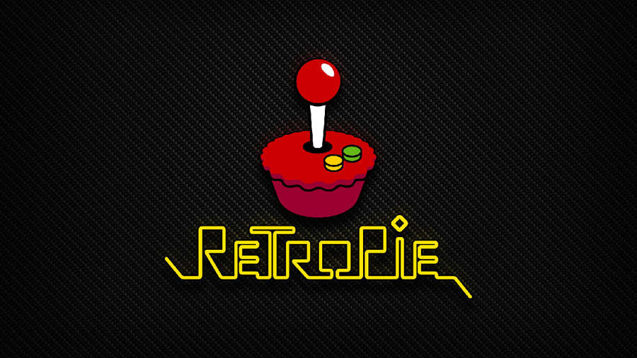

-
Close
At the start of the year we first learnt about binary and the ways that computers use to communicate.
For the inspired
After that we learnt about how IP addresses work and how your URL gets checked by the DNS server and matched with an IP address
-
Close
When I started off designing my website I first set up the html page with all the basic dividers and set it up into rows.
After that I started to write the CSS and SCSS. After that I wrote the javascript which after some writing looked really good in personal opinion.
-
Close
Introduction
For my project I set out to create a Retro Pi console. My objectives of my project were to create a working raspberry pi setup with simulation station and retro arch. These two programs on the raspberry pi allowed it to run roms which are versions of games created from the original cartridge.
Objectives
• Learn how to use the Raspberry PI
• Learn how to port ROMS over
• Setup two controllers with 2 separate inputs
Results
The Retro Pi software automatically copy’s roms across from a usb if you name a folder ‘retropie’. This proved incredibly useful when transferring over the network on the school’s network is extremely fiddly. So, in the end I chose the usb.
This is a picture of Donky Kong Country. This is one of the ROMS that I originally transfered over to test the Retro PI software.

his is a picture of . This is one of the ROMS that I originally transfered over to test the Retro PI software.
Process
At start of the project I got all my equipment ready. Then I downloaded Rufus to setup the image I downloaded for the retropi software. After this was done, I got a monitor and attached it to the Raspberry Pi via a HDMI cord. Following this I found that the raspberry pi didn’t have enough power so researched that I would need 6v 2a power supply for it to run properly without damaging the raspberry pi’s internals. After that I plugged the usb into the raspberry pi. Soon after that was done I started it up to find that all roms worked correctly as planned. Overall I Learnt a lot from this project and that it was worthwhile doing. I also setup two snes controllers bought from amazon. These controllers were setup in way based on which usb slot they were in from 0, 1, 2, 3 being players 1-4.
Disscusion
Some problems were when installing/transferring the Roms over. To solve this, I used CyberDuck but that wasn’t best way as I personally found it difficult to use because of the school network and it being not very open on the details of its own network. So, I just used a USB that automatically transfers via the Retro Pi software automatically copy’s roms across from a usb if you name a folder ‘retropie’. This made it incredibly easy. From my point of view, I achieved all my objectives I set out. In my opinion I think that I spent my time well in something that is worthwhile. There were problems along the way, but I solved them overtime.